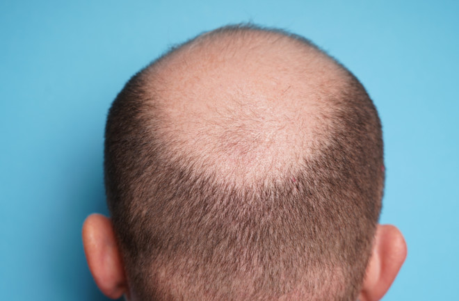
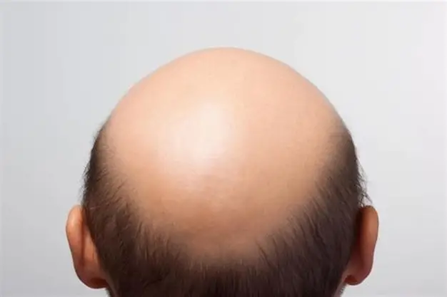

Many people's favorite animals are cats. Is Mr.Whalen's favorite animal.. cats?

Many people's favorite animals are cats. Is Mr.Whalen's favorite animal.. cats?
-
Is he bald by choice?
 Why's his classroom always freezing?

-